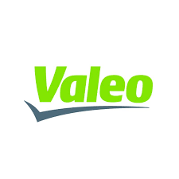
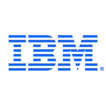
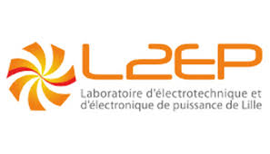

Education
Master of Science in Engineering: Electrical
Engineering & sustainable development
Université de Lille, école centrale Lille, école Arts et Métiers &
L2EP laboratory
| 2018 – 2020 |  Lille, France Lille, France |
Bachelor of Science in Engineering: Electrical Engineering
Université de Lille - sciences et technologie
| Major: Electronics, Electrical Energy and Control (EEA) | 2014 – 2018 | Lille, France |
Professional Experience
 Senior System Engineer: Sonnen GmbH
Senior System Engineer: Sonnen GmbH
| December 2025 – Present |
 New
Cairo, Egypt New
Cairo, Egypt
|
- MBSE: Developed modular Multi-Physical simulation models for diverse residential battery storage System architectures: Battery modules, hybrid inverters, grid variants and PV systems for DC-coupled or AC-coupled retrofit designs.
- Simulation Platform: Developed simulation platform with Model Exchange & cosimulation environments using FMI framework with single/multirate, adaptive/fixed-step configurations and implicit/explicit solvers
- Hardware Validation & SIL/HIL Testing: Initiated validated multi-node battery and inverter model libraries, benchmarks, and model wrappers prepared for SIL/HIL loops, directly validating topologies against physical experimental test-bench data.
Senior Analyst / Systems Infrastructure Lead: Capgemini
| December 2024 – December 2025 |
New
Cairo, Egypt
|
- Systems Architecture Management: Governed complex enterprise network, cloud, and endpoint system architectures for Bayer Crop Science to ensure optimal cross-platform integration.
- Root-Cause Analysis & Leadership: Acted as Technical Lead managing deep-dive incident investigations and system-level troubleshooting across multi-disciplinary engineering teams.
- Risk Mitigation & Optimization: Orchestrated large-scale infrastructure deployment schedules, minimizing systemic downtime and maximizing operational reliability.
 System Engineer: Technology & Strategy (T&S)
System Engineer: Technology & Strategy (T&S)
| January 2024 – March 2024 |
Lyon,
France
|
- ASPICE Traceability: Managed full requirement traceability loops and controlled change verification workflows under automotive guidelines.
- Functional Safety: Designed robust HW/SW system specifications aligned with safety objectives & Functional Safety under ISO 26262.

System Engineer: Valeo| April 2022 – January 2024 |
Gizeh,
Egypt
|
- Automotive V-Model Execution: Authored system element specs following strict A-SPICE guidelines and customer requirements.
- Cross-Functional Review: Led design reviews with implementation and testing teams while owning risk and issue tracking.
- EV Powertrain Projects: Coordinated deliverables for 48V Belt Starter Generator (iBSG) and 800V Silicon Carbide (SiC) Inverters.

Hardware Support Engineer: International Business Machines (IBM)| June 2021 – March 2022 |
Gizeh,
Egypt
|
- Enterprise Server Diagnostics: Ran advanced hardware troubleshooting on enterprise IBM/Lenovo System X and ThinkSystem lines.
- Infrastructure Deployment: Managed complex machine installations, network configurations, and firmware lifecycle packages & Formulated immediate hardware action plans as the primary technical point-of-contact for corporates IT Admin.
System Design Engineer: Fluid Actuation & Control Toulouse (FACT Group)
| April 2020 – October 2020 |
Toulouse,
France
|
- Clean Sky project electrical valve design: Modeled and sized an innovative electric linear actuator & Implemented strict mechanical/electrical boundary constraints to satisfy rigorous aviation safety standards.
- Multi-Variable Optimization: Executed parametric optimization loops in HEEDS to minimize total aircraft valve system weight.

Internship: Laboratoire d'Electrotechnique et d'Electronique de Puissance (L2EP)| October 2019 – February 2020 |
Lille,
France
|
- 3MW Wind Turbine Power system design and control: In collaboration with L2EP power systems team, I contributed to the optimized design of a mechanical/electrical power conversion stages focusing on power electronics design and DFIM/PMSG control strategies, enhancing overall system efficiency.